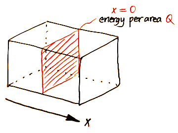
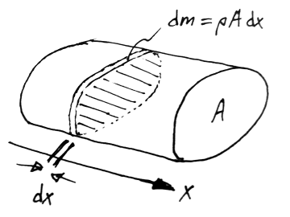

Suppose the block is initially at zero temperature throughout.
At time t = 0:
Inject thermal energy per area, Q, into the plane x = 0.
What happens?

Q.
How can you put a non-zero amount of thermal energy
into a plane which has zero thickness? A.
It's an idealisation, like a point charge.
In the case of a point charge,
the charge density is infinite but the amount of charge is finite.
Here, the initial temperature of the plane x = 0 will be infinite,
but the energy per area is finite.
Quantities
We find that by defining
Q' = \frac{Q}{\rho c},
the equations for this problem can be written
in terms of the constants \kappa and Q' only
(rather than k, \rho, c, and Q).
Note that Q' is to Q as \kappa is to k.
Here \delta (x) is the unit impulse
or Dirac delta function.
(Mathematicians prefer to call it a "generalised function"
or a "distribution".)
Basically \delta (x) is zero everywhere except at x = 0,
where it is infinity, in such a way that the area under the curve is 1:
\begin{gathered}
\delta (x) =
\begin{cases}
\infty, & x = 0 \\
0, & x \ne 0
\end{cases}
\\
\int_{-\infty}^\infty \delta (x) \td x = 1
\end{gathered}
The easiest way to think of \delta (x) is as a normal distribution
with a standard deviation of zero,
or as an infinitely tall and thin spike with area 1.
Note that \delta (x) has dimensions of 1 / \dimen{Length}.
Conservation of energy
Energy is conserved, for all time:
\int_{-\infty}^\infty T \td x = Q'
Q.
Why is the right hand side Q'? A.
The initial injection has energy per area Q in the plane x = 0.
In other words if we take a portion of that plane with area A,
the total energy within that portion will be Q A.
Subsequently the energy will spread out in the x-direction,
but since energy is conserved,
if we take an infinite cylinder (aligned with the x-axis)
with cross-sectional area A,
the total energy within that cylinder will still be Q A.
Now recall that \textq{Energy} = m c \textq{Temperature}.
Therefore the energy in the cylinder is
Q A = \int c T \td m.

Taking each mass element to be a slice of thickness \td x,
the differential mass is \td m = \rho A \td x.
Therefore
Q A = \int_{-\infty}^\infty c T \rho A \td x,
or
\int_{-\infty}^\infty T \td x = \frac{Q}{\rho c} = Q'.
Summary
That was a lot to process,
so here are the defining equations again without the commentary:
The temperature T can only depend on
the independent variables x and t
and the constants \kappa and Q',
because there are no other variables or physical constants
in the defining equations:
T = T (x, t; \kappa, Q')
The only way this can make dimensional sense is if
T = \temp{\mathcal{T}} \cdot \dimenless{\mathcal{L}},
where \temp{\mathcal{T}} is a combination (of x, t, \kappa, and Q')
which has dimensions of temperature,
and \dimenless{\mathcal{L}} is a combination
which is dimensionless.
where a is a free variable.
Thus we obtain the temperature combination \temp{Q' / \sqrt{\kappa t}}
and the dimensionless group \dimenless{x / \sqrt{\kappa t}}.
Especially take note of what variable is held constant
in each partial derivative, because:
Ambiguity
In the current problem, the time coordinate t appears in
both the old and the new coordinate systems.
We need to be VERY careful, because \pd /{\pd t} is ambiguous:
\old{\dfrac{\pd}{\pd t}} in the old coordinate system (x, t)
is rate of change w.r.t. \old{t}, with \old{x} held constant
\new{\dfrac{\pd}{\pd t}} in the new coordinate system (\xi, t)
is rate of change w.r.t. \new{t}, with \new{\xi} held constant
These are NOT the same thing.
To disambiguate between the two possible meanings of \pd /{\pd t},
it is common to use subscripts to indicate
which variable is being held constant:
\old{\dfrac{\pd}{\pd t}} in the old coordinate system (x, t)
is written \old{\roundbr{\dfrac{\pd}{\pd t}}_x}
\new{\dfrac{\pd}{\pd t}} in the new coordinate system (\xi, t)
is written \new{\roundbr{\dfrac{\pd}{\pd t}}_\xi}
Changing coordinates
Let us CAREFULLY apply the change of coordinates now.
The coordinate transformation is given by
Change of coordinates for the boundary/initial conditions
If you stare at the equations
\begin{aligned}
T (\old{x}, \old{t}) &=
\frac{Q'}{\sqrt{\kappa \new{t}}}
\cdot
U (\new{\xi})
\\
\frac{\old{x}}{\sqrt{\kappa \old{t}}} &= \new{\xi}
\end{aligned}
for long enough,
you will see that the condition
\eval{U}_{\new{\xi} = \pm\infty} = 0
(or \lim_{\new{\xi} \to \pm\infty} U (\new{\xi}, \new{t}) = 0
if you prefer limit notation)
takes care of both the boundary condition
and the initial condition.
where \old{t} is held constant
for the purposes of evaluating the integral.
Now \new{\xi} = \old{x} / \sqrt{\kappa \old{t}}.
With \old{t} held constant
and \old{x} running from -\infty to \infty,
the variable \new{\xi} will also run from -\infty to \infty.
Therefore
Since the similarity solution is scale-invariant,
in order to plot the solution we need to introduce an arbitrary length scale.
Calling the length scale x_0, we define the dimensionless variables
\begin{aligned}
x' &= x / x_0 \\
t' &= \kappa t / {x_0}^2 \\
T' &= x_0 T / Q'.
\end{aligned}